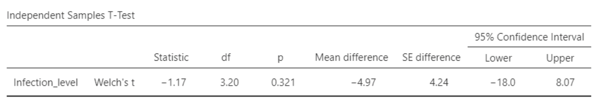

7 Chapter 7: Mixed-effects models
This chapter covers “mixed-effect” regression and ANOVA models in which some of the coefficients are modeled as random values drawn from a distribution, rather than fixed values that exist at the population level. Mixed models are particularly useful when you have data where individuals are measured more than once.
Outline of notes
- Repeated measures
- The independence assumption
- Cheating with repeated measures
- Cheating ourselves with repeated measures
- Challenges and opportunities with repeated measures data
- Random effects
- The mixed effects model
- Applied example: “The liking gap”
- Replicating a published mixed model analysis
7.1 Repeated measures
“Repeated measures” refers to measuring the same subjects (people, trees, dogs, cities, cells, widgets, etc) more than once.
Studies that use repeated measures are often referred to as “within subjects” studies. The idea is that multiple measurements within the same subject will be compared.
Mixed models are popular tools for analyzing repeated measures data; we’ll get to these later in the notes. For now, we’ll consider the problems and opportunities that arise from the use of repeated measures data.
7.2 The independence assumption
We have looked at model assumptions in this class, e.g.
\[ \epsilon_i \sim Normal(0, \sigma) \]
There is one that has been left out. The complete way to write this statement is:
\[ \epsilon_i \overset{iid}\sim Normal(0, \sigma) \]
The “iid” means “independent and identically distributed.
\(\epsilon_i \overset{iid}\sim Normal(0, \sigma)\) says that \(\epsilon_i\) takes on values that are independently sampled from the same normal distribution.
“independently sampled” means that the value of the next data point is not dependent upon the value of the previous data point.
Every method we have used assumes independence of the response variable, conditional on the predictor(s).
But, if the same subjects are measured multiple times, then the multiple observations on each subject will not be independent.
Example: suppose we take a random sample of 10 people, have each solve a maze, and record how much time it takes each person to solve it. Call this time \(T\).
We might model the times as i.i.d. normal:
\[ T_i \overset{iid}\sim Normal( \mu, \sigma) \]
This means that, given a mean and standard deviation, each observed time \(T_i\) is uncorrelated with any previous times. This should make sense: there is no reason that the \(3^{rd}\) person’s maze time should depend upon the \(2^{nd}\) person’s maze time.
But, if we take repeated measures on each subject, then our data will not be independent.
For instance, suppose we have 10 observations on maze completion from 2 people, where the first 5 come from one person and the last 5 come from the other.
Then I would expect correlation (non-independence) between the first 5 maze times, and between the last 5 times. Observation 5 should be closer to observations 1-4 than it is to observations 6-10.
7.3 Cheating with repeated measures
We will look at a fake data simulation of repeated measures data.
In this simulation, suppose we have cows infected with the Staph bacteria.
We are comparing two treatments for Staph. We have 6 cows, and each treatment is randomly assigned to 3 cows. We will do a t-test to compare mean infection levels (quantified on some arbitrary scale).
We will also assume that the two treatments have an identical effect. Therefore the null hypothesis of no difference in means is true.
The file cows_ttest.jmp has some fake data, simulated as \(y_i \sim Normal(12,4)\) for both groups:
Not surprisingly, the t-test gives no significant difference in means:
\[ 95\% \textit{ CI for } \mu_1 - \mu_2 = (-18.00, 8.07), \text{ p-value} = 0.321 \]

Now suppose we measure infection level for each cow seven times after receiving treatment.
The file cows_repeated_ttest.csv contains data simulating this scenario.
For each cow, there are 7 observations. These all average out to the one observation per cow from the last data set.
But check out these t-test results!
Notice where it says degrees of freedom = 29.2. If your degrees of freedom exceeds your sample size, something is wrong.
7.3.1 What happened?
Comparing the two t-tests:
The mean difference is nearly the same for both.
The standard error for the repeated measures data is much smaller.
Remember that the t-test is just a simple regression model:
\[ y_i = \beta_0 + \beta_1Group_i + \epsilon_i \text{ where } \epsilon_i \overset{iid}\sim Normal(0, \sigma) \]
In this case, \(\hat{\beta}_1\) is the estimated mean difference in infection levels between the two groups.
There’s nothing wrong with this estimate on its own. However its standard error is computing using an incorrect assumption: that all of the observations within each group are independent.
7.3.2 Effective sample size
In this case, the apparent sample size is \(n = 42\), or \(n = 21\) per group.
But the “effective” sample size is \(n = 6\), or \(n = 3\) per group.
Taking lots of observations from each animal and doing a t-test on all the data amounts to falsely inflating the sample size without having to actually collect more data.
Main lesson: observations that are correlated should not be treated as independent!
7.4 Cheating ourselves with repeated measures
Treating repeated measures as independent can fool us into thinking we’ve discovered an association when really there is none.
It can also do the opposite: it can fool us into thinking we see no association when really there is one.
This will be illustrated with another toy example. In this case, we will again consider collecting data on infection level in cows under two treatments. This time, we’ll imagine collecting repeated observations over the course of a week.
Here are the data in “wide form”. Treatment group B is highlighted to distinguish it from treatment group A.
Two things to note:
There is a lot of variability across cows.
Every cow’s infection rating goes down over time
Here are the data in “long form.”
Long form is needed for most analyses.
We can use jamovi’s Rj-code editor to wide form to long form. (Though using Excel might be easier)
The following code will convert the data from wide to long form. Note you will need to open the data in a new session of jamovi and rename the Day and Infection_level columns.
7.4.1 Converting from wide to long form
We must now transform the Day column of the longform data. We want the variable Day to take on nominal integer values
Double click the Day column and in the Data menu select Transform / Using Transform / Create New Transformation.
7.4.2 Plotting the data
Here is a basic plot of infection rates across time.
There appears to be a small downward trend, and lots of noise in the data.
But we can account for this noise! It is due to different cows having different overall infection rates.
Here is a similar plot, with the Y axis grouped by treatment.
This shows a small decrease for treatment B.
But, we are still treating these observations as though they are independent.
They are not independent; they are correlated within each cow.
Here is the same plot, but with “cow_ID” as the overlay variable.
Each cow now gets its own line. The downward trend for B is clear.
Also, it is now clear that most of the variation in infection rate was due to differences between cows. Once this is accounted for, variability is low.

7.4.3 Analyzing the data
These plots illustrate the idea behind accounting for repeated measures.
In this module, we will learn how to incorporate repeated measures in statistical models.
For now, let’s look at some different way of analyzing the data that we just plotted.
7.4.4 Analyzing the data, assuming independence
We can run regression models where infection rate is the response variable and some combination of treatment and day are the predictors.
We know both variables matter, and that they interact – the “effect” of day on infection level depends on treatment, and the “effect” of treatment on infection level depends on day.
The next slide shows output for fitting this model:
\[ \textit{Infection level}_i = \beta_0 + \beta_1Treatment + \beta_2Day + \beta_3Treatment*Day + \epsilon_i \\ \text{ where } \epsilon_i \overset{iid}\sim Normal(0, \sigma) \]
\(R^2\) is small, suggesting this model does not explain much variability in infection rates.
Remember, we know that a lot of variability is due to differences between cows. This is all getting “absorbed” by the error term.
Large error variance gives small \(R^2\) and large standard errors for slopes
7.4.5 Analyzing the data, accounting for cows
Here are results from analyzing these data using a mixed model. This mixed model accounts for differences between cows, and the fact that repeated measures taken on each cow are correlated.
We will cover the details of how mixed models work in the next set of notes. For now, note the much larger \(R^2 = 0.83\)
7.4.6 Side by side comparison
The mixed model (on the bottom) gives smaller standard errors for Day and the interaction.
Note what didn’t change: the parameter estimates!
7.5 Challenges and opportunities with repeated measures data
Repeated measures data can be challenging to analyze, if the design gets complicated. We will see some study designs in which it isn’t immediately obvious how to set up an appropriate model.
Repeated measures data can also be analyzed incorrectly (assuming independence) to artificially increase apparent sample size and get strong looking results that are not valid.
But repeated measures data can also be very useful! “Within subject” designs, in which subjects are measured repeatedly across time and / or conditions, can greatly enhance the precision and power of our inferences. This is because variability that would normally be accounted for by the error term can instead be attributed to overall differences between the subjects from whom repeated measurements were taken.
7.6 Random effects
The “mixed” in “mixed models” refers to a mix of random effects and fixed effects.
All of the predictor variables we’ve seen all semester have been “fixed effects”. What this means will only make sense in comparison to a new kind of predictor: a “random effect”.
Fixed effects variables are predictor variables for which we “estimate” a slope coefficient, usually denoted with a \(\beta\). We calculate a value for this coefficient using our data, and then we treat this value (usually denoted as a \(\hat{\beta}\)) as an estimate for some fixed but unknown population-level parameter.
Sometimes, though, we want our model to account for a variable that is important for explaining variability in the response variable, but for which we do not want to treat its coefficients as estimates of unknown parameters. For instance, in the previous “cows” examples, we’ll want to calculate the mean infection levels for each cow and take these into account. But, it probably doesn’t make sense to treat each cow’s mean as a population level parameter value of interest. After all, if we conducted the study again, we’d have new cows!
Treating this predictor variable as a random effect (or random factor) will accomplish this. Random factors take on values that are treated as having been drawn at random from a larger population of possible values that might be different if we take a new sample. These random factors have coefficients (aka slopes) that are also treated as taking on random values.
So, with the “cows” examples, we imagined measuring the same cows over and over again. “Cow” should probably be treated as a random factor in these cases. The cows themselves were drawn from a larger population; we would not get the same cows again in a new study.
Also, we wanted to account for differences in the mean infection levels for each individual cow, so that we could estimate standard errors appropriate to our study designs. And these mean infection levels should also be treated as random, in that they came from some population of possible mean infection levels.
So, the cows are random, and their coefficients are random.
There are many interpretations of a “random effect”, and they aren’t always helpful. From a 2005 paper by Andrew Gelman:
- Fixed effects are constant across individuals, and random effects vary.
Effects are fixed if they are interesting in themselves or random if there is interest in the underlying population.
When a sample exhausts the population, the corresponding variable is fixed; when the sample is a small (i.e., negligible) part of the population the corresponding variable is random”.
“If an effect is assumed to be a realized value of a random variable, it is called a random effect.”
So, interpretations of what random vs. fixed effects “really mean” will vary.
But, formally, it isn’t so ambiguous. “Fixed” effects are treated as having “fixed” coefficients whose values we estimate and draw inference on (e.g. with confidence intervals and hypothesis tests).
“Random” effects are treated as having “random” coefficients drawn from some distribution. We won’t estimate individual coefficients, but we will estimate the variance of the distribution from which they came.
7.6.1 Subjects and Nesting
Our main motivation right now is to have a method of accounting for repeated measurements on the same subjects.
So, in this class, we will look at mixed models for which the random effect is “subject”. In other words, we will make models that account for differences between subjects measured multiple times.
In a study in which subjects are assigned to groups, each subject is assigned to one group.
From a modeling perspective, subject is “nested” within group. In general, one variable is nested within the other if values of the nested variable only occur in certain categories of the variable it is nested within.
In this case, cows are nesting within treatments because each cow is measures only in one treatment. A non-nested design would have each cow measured under each value of the other predictors. In other words, each cow would be measured under both treatment.
Another example: say we are doing an education research study and we randomly sample 4 districts in a state, then 3 schools in each district, then 7 classrooms in each school. In this case, classroom is nested within school, and school is nested within district. This is because each classroom exists in only one school, and each school exists in only one district.
The notation for “subject nested within group” is \(subject(group)\)
7.7 The mixed effects model
A mixed effects model contains both random and fixed effects.
Applying this to the cows example, in which cows are assigned to one of two treatment groups and measured daily for seven days:
\[ \textit{Infection rate}_i = \beta_0 + \beta_1Treatment_i + \beta_2Day_i + \beta_3Treatment_i*Day_i + \alpha_jCow_j(Treatment_i) + \epsilon_i \\ \text{ where } \alpha_j \sim Normal(0, \sigma^2_\alpha) \\ \text{ and } \epsilon_i \sim Normal(0, \sigma^2_\epsilon) \]
Don’t worry too much about the notation details. The most important part is that “Cow” is random, while “Treatment” and “Day” are fixed.
We will not estimate coefficients for the different cows. This model treats each cow as having its own “random intercept”, meaning that the intercept, \(\beta_0\), gets adjusted by some amount for each individual cow.
As we saw in the last set of notes, the purpose of this is to let the model estimate the effects of the “Treatment” and “Day” variables, while taking accounts of the fact that different cows will have different overall mean infection rates.
7.7.1 The mixed effects model in jamovi
To fit this model in jamovi, use “Linear Models”, select “Mixed Model”, and then add the fixed predictors as factors and covariates and random predictors as cluster variables:
Note that Cow_ID is the random effect. Treatment, Day, and their interaction are fixed effects.
Note also jamovi will also require you to specify the random effects.
jamovi gives the usual parameter estimates output, as well as a residual plot:
Notice that “Cow_ID” is not listed under parameter estimates; only fixed coefficients are estimated.
Each cow has its own random coefficient, modeled as having been drawn from a normal distribution.
7.7.2 Slope coding in “Mixed Model”
Notice the categorical predictor “Treatment” lists “Effect” as “A – (B, A)”. jamovi is coding this slope as the difference between Treatment A and the “mean” of Treatments A and B.
So, if we were looking at Treatment B, we’d apply a slope of -0.513.
7.8 Applied example: “The liking gap”
The journal Psychological Science published many studies in which data are publicly available.
The remaining slides reproduce results from a recent study published in Psychological Science on the difference between how much individuals “like” other people and how much they perceive others “like” them.
The paper is available at: https://doi.org/10.1177%2F0956797618783714
The basic setup is that volunteers were paired up (each pair is called a “dyad”) and directed to have a conversation for five minutes.
After this, participants rated their partners on some survey questions that the authors take as a measure of liking the other person.
Participants also rated how much they thought they were liked.
The study is looking for a “gap” (i.e. difference) between volunteers’ self-perception of how much their partners liked them, and how much their partners actually liked them.
7.8.1 The liking gap example
From the results section of the paper:
7.8.2 Fitting the model in jamovi
\[ \textit{Liking index}_i = \beta_0 + \beta_1\textit{self_other} + \beta_2Day + \alpha_jpid_j(did_k) + \gamma_kdid_k + \epsilon_i \\ \text{ where } \alpha_{j(k)} \sim Normal(0, \sigma^2_\alpha), \\ \gamma_k \sim Normal(0, \sigma^2_\gamma), \\ \text{ and } \epsilon_i \sim Normal(0, \sigma^2_\epsilon) \]
The model statement starts looking complicated. We have two different random effects, one nested in the other.
The \(\alpha\)’s and \(\gamma\)’s are modeled as random values.
We have two fixed effects: self_other and Day. Their coefficients will be estimated as normal.
\[ \textit{Liking index}_i = \beta_0 + \beta_1\textit{self_other} + \alpha_jpid_j(did_k) + \gamma_kdid_k + \epsilon_i \\ \text{ where } \alpha_{j(k)} \sim Normal(0, \sigma^2_\alpha), \\ \gamma_k \sim Normal(0, \sigma^2_\gamma), \\ \text{ and } \epsilon_i \sim Normal(0, \sigma^2_\epsilon) \]
The random effect variances, \(\sigma^2_\alpha\) and \(\sigma^2_\gamma\), are estimated in the mixed model. These variances could be interpreted, but we will stick to interpreted the fixed effects in this class.
7.8.3 Adding an interaction…
The next section of the paper looks at personality variables as predictors:
In jamovi:
We’ll stop here. The paper goes on through many additional studies, and the data are all available via the supplemental materials link.
7.9 Replicating a published mixed model analysis
The remainder of this chapter covers the analysis from a 2017 Psychological Science paper by Goudeau and Croizet, titled:
“Hidden Advantages and Disadvantages of Social Class: How Classroom Settings Reproduce Social Inequality by Staging Unfair Comparison”
This paper presents three studies on one topic. These notes cover studies 1 and 3; study 2 is reserved for a homework assignment.
7.9.1 Worked example overview
This study was performed in France. The data are available at https://osf.io/rkj7y/ and the data file has a codebook sheet that defines the variables:
In each study, 6th grade students are given a challenging reading comprehension assignment.
Performance on the assignment is the dependent variable.
The researchers investigate whether students’ performance is associated with their awareness of their classmates’ performance, and whether this association can be moderated by students’ awareness of the different levels of preparation given to different students.
7.9.2 Paper abstract
7.9.3 Study 1
The variables used in this study are:
Performance (response)
Visibility condition (fixed effect)
Social class (fixed effect)
Visibility X Social class interaction (fixed effect)
School (random effect)
Classroom, nested within School (random effect)
7.9.3.1 Study 1 model
\[ \textit{PERF}_i = \beta_0 + \beta_1X_1 + \beta_2X_2 + \beta_3X_1*PCS + \alpha_{j(k)}CLASSE_{j(k)}(ETABLISSEMENT_k) + \gamma_kETABLISSEMENT_k + \epsilon_i \\ \text{ where } \alpha_{j} \sim Normal(0, \sigma^2_\alpha), \\ \gamma_k \sim Normal(0, \sigma^2_\gamma), \\ \text{ and } \epsilon_i \sim Normal(0, \sigma^2_\epsilon) \]
Refer to the codebook for variable definitions
Note that in this study, subjects (students) are only measured once. The repeated measurements are on classrooms and schools.
Also note that PCS compares working class (PCS=1) to upper class (PCS=3.)
7.9.3.2 Study 1 in JMP
Note that the response variable, PERF, is score on a reading comprehension test, on a scale of 0 to 20 points.
7.9.3.3 Notes on Study 1 random effects output
“The random effects covariance parameter estimates” table shows that there is much more residual (error) variance than there is variance across classrooms or across schools.
One very odd result: the classroom variance estimate is negative! But variances cannot be negative.
If we had deselected “unbounded variance estimates” under Fit Model, this would be zeroed out. It is a strange quirk of maximum likelihood variance estimation that negative estimates are possible. We can ignore this, and treat the classroom variance as just very small.
7.9.3.4 Notes on Study 1 fixed effects output
We see strong “main effects” for visibility condition (X1), social class (PCS), and their interaction.
A general principle for models with strong interactions is that our interpretation should focus on the interactions.
Here, the interaction coefficient is -2.69, and the coefficient for \(X_1\) is 1.12.
For the Effect of \(X_1\) “-1 - 1” refers to the “differences not visible” condition, in which students do not raise their hands when they have the answer. For the Effect of PCS “3 - 1” refers to change in score for upper class students vs. working class students. So, the “effect” of visibility seems to apply to working class students but not to upper class students, since –2.69 and 1.12 nearly cancel each other out.
7.9.3.5 Plotting the fixed effects
Here is the plot reported in the paper, and the same plot in JMP:
The practice of using a bar plot to show means is common, but flawed. The bars don’t mean anything; all they do is go up to the means.
Here is what this looks like using boxplots instead.
Notice that this plot shows variability in the data, where the bar plot does not.
7.9.4 Study 3
In Study 2, social class is not used. Rather, some students are given better preparation for the reading comprehension test than others.
Similar results are found: those with worse preparation perform more poorly when students are told to raise their hands after determining the answer.
In Study 3, the authors attempt to “undo” this effect by informing the class that some students were given better preparation than others. Half the classrooms are made aware of this; the other half are not.
The variables in this study are almost the same as in study 1, with these changes:
X1 is “context”:
-1 = awareness of the disadvantage
1 = unawareness of the disadvantage
X2 is “level of familiarity” with the reading material, based on intentional preparation given by the researchers:
-1 = high level
1 = low level
7.9.4.1 Study 3 model
\[ \textit{PERF}_i = \beta_0 + \beta_1X_1 + \beta_2X_2 + \beta_3X_1*X_2 + \alpha_{j}CLASSE_{j}+ \epsilon_i \\ \text{ where } \alpha_{j} \sim Normal(0, \sigma^2_\alpha), \\ \text{ and } \epsilon_i \sim Normal(0, \sigma^2_\epsilon) \]
In this data set, there is no variable for “school”, only one for “classroom”. This isn’t explained in the paper.
7.9.4.2 Study 3 in jamovi
As with before, the variance across classrooms is very small relative to the error variance.
The largest overall effect is \(X_2\): level of familiarity with the material. Students who are better prepared score higher.
The negative interaction shows that the difference in performance between those with higher vs. low familiarity is lower when students are aware of the difference in familiarity.
The interaction of -5.81 just about cancels out the estimated slope for \(X_1\)[-1] of 4.24.
This shows that there is very little difference in scores between students with high preparation who are and are not aware of the advantage.
It helps to look at the data.
The generic “\(X_1\)” and “\(X_2\)” have been replaced with more meaningful titles.
And here are the bar plots shows in the paper.
Again, the boxplots show more information.
In this case, the boxplots reveal a potentially concerned “ceiling effect”: many students earned the maximum possible score. This can’t be seen from the bar plot.